WES Xerox - Dépanner le WES
Règles générales pour le dépannage
Afin de permettre à l'équipe Support Doxense® d'établir un diagnostic de panne rapide et fiable, merci de communiquer le maximum d'informations possible lors de la déclaration de l'incident :
-
Quoi ? Quelle est la procédure à suivre pour reproduire l'incident ?
-
Quand ? A quelle date et à quelle heure a eu lieu l'incident ?
-
Où ? Sur quel périphérique et depuis quel poste de travail a eu lieu l'incident ?
-
Qui ? Avec quel compte utilisateur s'est produit l'incident ?
-
Fichier trace Watchdoc.log : merci de joindre le fichier de trace Watchdoc.
-
Fichier de traces WES : merci d'activer les fichiers de trace sur chaque file pour laquelle vous avez constaté un incident.
Une fois ces informations rassemblées, vous pouvez envoyer une demande de résolution depuis le portail Connect, outil de gestion des incidents dédié aux partenaires.
Pour obtenir un relevé optimal des données nécessaires au diagnostic, utilisez l'outil Watchdoc DiagTool fourni avec le programme d'installation de Watchdoc (cf. Créer un rapport de logs avec DiagTool).
Activer les traces du WES (WEStraces)
Pour effectuer un diagnostic du problème rencontré sur les applications embarquées, il convient d'activer les fichiers traces (logs) spécifiques aux communications du WES.
Pour activer les traces :
-
dans l'interface d'administration web de Watchdoc, depuis le Menu Principal, cliquez sur Files d'impression ;
-
dans la liste des files, cliquez sur la file dotée du WES pour lequel vous souhaitez activer les fichiers traces ;
-
dans l'interface de gestion de la file, cliquez sur le bouton Propriétés ;
-
dans la rubrique [Nom_du_WES], cliquez sur le bouton Editer la configuration :

-
dans la section WES > Diagnostic, cochez la case Activer les traces ;
-
dans la liste Niveau de traces, sélectionnez :
-
Auto : conserve les traces standard ;
- Inclure les contenus binaires : conserve les traces détaillées.
-
- dans le champ Chemin, indiquez le chemin du dossier dans lequel doivent être enregistrés les fichiers de trace. Si vous laissez le champ vide, les fichiers trace seront enregistrés par défaut dans le dossier d'installation Watchdoc_install_dir/Logs/Wes_Traces/QueueId :


Travaux de numérisation, fax et photocopie non comptabilisés
Si les travaux de numérisation, fax et photocopie ne sont pas comptabilisés par Watchdoc, vérifiez que l'adresse (nom d'hôte ou IP) du serveur Watchdoc configurée dans le périphérique est correcte :
-
dans l'interface de configuration de la file, dans la section WES, cliquez sur le bouton Etat de l'application (affiché lorsque le WES est correctement installé) ;
-
cliquez sur le bouton Télécharger afin de télécharger les fichiers de logs et de configuration du WES ;
-
si la configuration de l'adresse et/ou des ports n'est pas correcte, cliquez sur le bouton Configurer de l'interface de configuration de la file ;
-
vérifiez que la procédure a réglé le problème.
Impossibilité de se connecter depuis le clavier (C60/C70 avec Fiery®)
Contexte
Après installation d'un WES Xerox sur des périphériques C60 ouC70 avec Fiery®, il arrive que le bouton permettant de se connecter ne s'affiche pas sur le clavier.
Résolution
Pour régler ce problème :
-
rendez-vous dans l'interface web d'administration du périphérique ;
-
cliquez sur Properties > Security > Xerox Secure Access Settings ;
-
dans la section Xerox Secure Access Server, vérifiez que la case correspondant au paramètre Local Login est cochée (enabled) ;
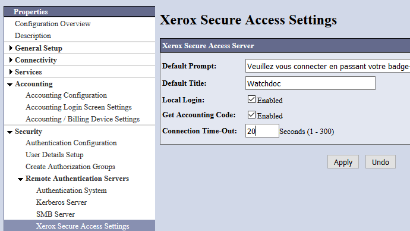
Erreur lors de l'installation du WES - IPLockedOut
Contexte
Lors de l'installation d'un WES Xerox il arrive qu'un message d'erreur s'affiche au moment du dialogue avec le kit de sécurité jba (Job Base Accounting).
Un message d'erreur indique que la requête au service SOAP a été rejetée en raison de l'impossibilité d'authentifier l'utilisateur ("unable to authenticate user").
Cause
Ce problème survient notamment après désinstallations et réinstallations successives du WES : le service d'administration, considérant ces tentatives comme des anomalies (IPLockedOut: Excessive Failure Attempts), verrouille la connexion aux services web.
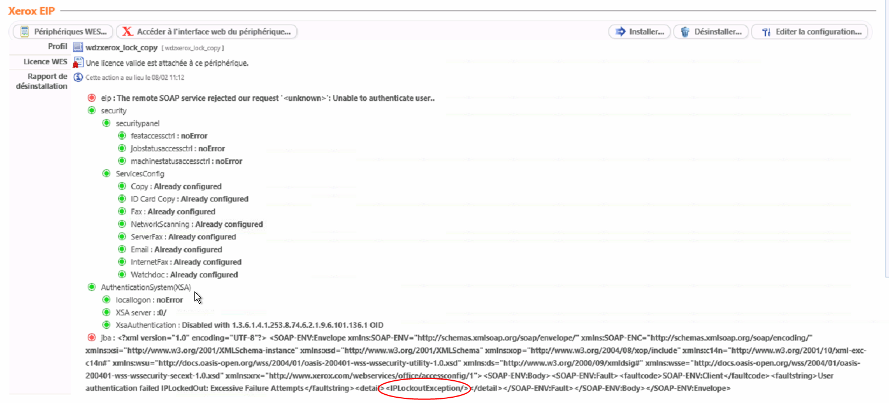
Résolution
Pour résoudre ce problème, il convient d'annuler la restriction de connexion aux services web depuis l'interface d'administration du périphérique en appliquant la procédure suivante :
-
rendez-vous sur l'interface web d'administration du périphérique ;
-
cliquez sur l'onglet Propriétés ;
-
dans le menu, cliquez sur Services > Impression > Service Web d'impression ;
-
dans la section Verrouillage IP des services Web, cliquez sur le bouton Annuler le verrouillage :
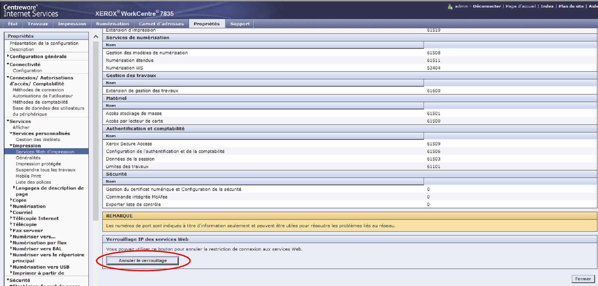
-
réitérez l'installation du WES dans Watchdoc et vérifiez qu'elle s'opère correctement.
Erreur liée au Xerox Secure Access (modèle Xerox 7855).
Contexte
Lors de l'installation du WES sur la file d'impression, après avoir cliqué sur le bouton Installer, deux pastilles rouges s'affichent et le message d'erreur suivant s'affiche : "xsaws : implementation problem. Please do it manually".
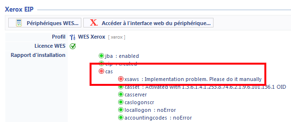
Cause
Cette erreur est due au fait que le Xerox Secure Access Web Service (xsaws) n'est pas actif.
Résolution
Pour résoudre ce problème,
-
rendez-vous dans l'interface de configuration du périphérique Xerox 7855
-
vérifiez que la case Xerox Secure Access est bien activée. Si elle n'est pas activée, cochez-la.
-
Si la case est déjà activée, désactivez puis réactivez Xerox Secure Access :
-
décochez la case Xerox Secure Access ;
-
cliquez sur le bouton Save pour valider ;
-
recochez la case Xerox Secure Access ;
-
cliquez sur le bouton Save pour valider ;
-
réinstallez le WES en suivant la procédure.
Impossibilité de se connecter à l'aide du clavier
Contexte
Il arrive qu'un message invite l'utilisateur à se connecter à l'aide d'un badge et n'offre aucun autre moyen d'authentification.
Résolution
Il convient de vérifier les paramètres d'accès sécurisé :
-
depuis l'interface d'administration du périphérique, cliquez dans le menu Securité> Authentification à distance > Paramètres d'accès sécurisé Xerox
-
dans l'interface des Paramètres d'accès sécurisé Xerox, cochez la case Local Login :
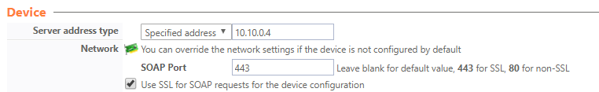
è Après validation de la modification, un bouton apparaît sur l'écran pour autoriser l'authentification à l'aide du clavier du périphérique.
Fonction Job assembly sur modèles Xerox WorkCenter 78xx
Contexte
Sur les modèles de MFP WorkCenter 78xx, la fonction Job Assembly permet au périphérique de numériser plusieurs documents pour les convertir en un seul .pdf.
Procédure
Pour configurer cette fonction :
-
accédez à l'interface web de gestion du périphérique en tant qu'administrateur ;
-
depuis l'interface d'administration, dans le menu, cliquez sur Login>Permissions>Accounting>Accounting Methods ;
-
dans l'interface Accounting Methods, section Touch and Web User Interfaces, cliquez sur le bouton Edit ;
-
dans la liste Job Types, dans la colonne Accounting Workflow, sélectionnez l'option Capture Usage ;
-
cliquez sur Save pour valider le paramétrage de la fonction.
ScantoMail impossible depuis les WorkCenter® 7845 - limite de comptabilisation
Contexte
Il arrive que des numérisations (fonction ScantoMail) effectuées depuis le WES Xerox® des modèles WordkCenter® 7845 ne soient pas transmises.
La numérisation est transmise au périphérique, puis supprimée (avant d'être envoyée au destinataire) et une page d'erreur est imprimée avec le message "Supprimé : Une ou plusieurs limites de comptabilisation ont été atteintes".
Dans le relevé de transfert SMTP, le message concernant ces travaux est le suivant : "Etat du travail : échec - travail annulé par le système".
Lorsque le WES Watchdoc est désinstallé sur ce périphérique, la numérisation avec envoi par mail (ScanToMail) fonctionne de nouveau.
Cause
Le problème est dû à une incompatibilité entre la fonction ScantoMe et la gestion des droits sur le périphérique dans Watchdoc®.
Résolution
Pour résoudre ce problème, il convient de désactiver le contrôle des droits sur le périphérique :
-
rendez vous dans l'administration du profil WES Xerox : Watchdoc>Menu Principal> section Configuration, cliquez sur Web & WES profils ;
-
dans la liste des WES, sélectionnez le WES Xerox activé sur les périphériques qui présentent le problème ;
-
accédez à l'interface de configuration du WES ;
-
dans la section Authentification, paramètre Gestion des droits, décochez les cases permettant un contrôle des fonctions du périphérique (photocopies, numérisation vers email, autres numérisations, impression) :
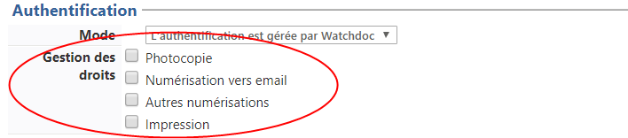
-
validez ensuite le paramétrage du profil WES :
-
Réinstallez le WES sur les périphériques concernés ;
-
vérifiez le fonctionnement du ScanToMail.
Internal server error
Contexte
Le WES Xerox est installé en mode interserveur avec une file virtuelle. L'utilisateur envoie un travail d'impression sur la file virtuelle et souhaite le libérer via le WES.
Le document s'affiche dans la liste des travaux, mais avec le message InternalServeurError :
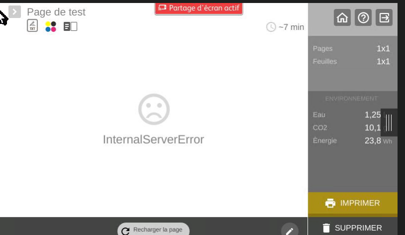
Dans les fichiers traces du serveur sur lequel est installée la file de destination, le message suivant est présent :
PULLPRINT|PullPrintManager "Failed to send print command to remote Server"
Cause
Deux raisons peuvent causer cette erreur :
-
l'EMF a été activé sur la file virtuelle, ce que le spooler Doxense gère mal ;
-
le groupe auquel est affectée la file n'est pas un groupe créé sur le master (Error: System.InvalidOperationException: Queue[RJ-002.IMP1] cannot compute ACL chain, group[ixi] is unknown...)
Résolution
Procédez comme suit sur toutes les files virtuelles.
-
Depuis le Menu principal, section Exploitation, cliquez sur Files d'impression, emplacement, groupes de files et pools ;
-
dans la liste Files d'impression, cliquez sur la file virtuelle ;
-
puis cliquez sur Editer les propriétés ;
-
dans la section Périphériques,
-
désactiver l'EMF sur toutes les files virtuelles
-
activez le mode CSR sur toutes les files virtuelles :
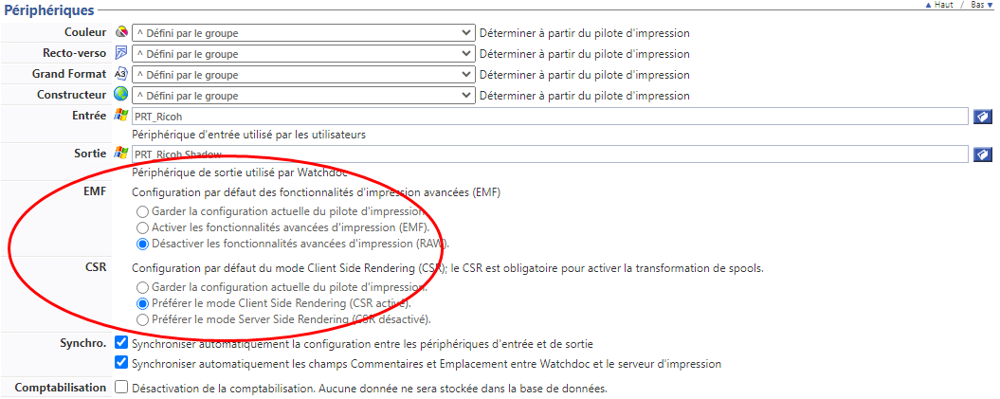
-
-
enregistrez ces nouveaux paramètres ;
-
redémarrez la file.
Message d'erreur lors de l'installation - Le WES n'est pas installé intégralement
Contexte
Lors de l'installation du WES Xerox sur une nouvelle file ou sur un périphérique sur lequel le WES était déjà installé, le rapport d'installation affiche des pastilles rouges pour les étapes suivantes :
-
Network accounting > jba : user authentication failed (SOAP-ENV-Client)
-
pull print: failed to create or update EIP scan application: did not receive a valid checksum after service "WatchdocPullPrint" update
-
WEScan: failed to create or update EIP scan application: did not receive a valid checksum after service "WatchdocScan" update
-
Security > set access config: user authentication failed (SOAP-ENV-Client)
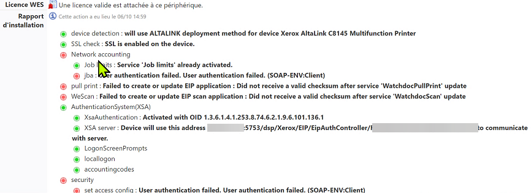
Cause
Ce problème survient lorsque le périphérique d'impression est verrouillé.
Résolution
Pour résoudre le problème :
-
depuis un navigateur, saisissez l'url d'accès à l'interface d'administration du périphérique d'impression ;
-
ajoutez la valeur diagnostics/ipLockout.php à la fin de l'IP du périphérique ;
-
authentifiez-vous en tant qu'administrateur dans le périphérique ;
-
vérifiez que le mot de passe du compte administrateur et le mot de passe configuré dans le profil WES sont identiques ;
-
vérifiez que le périphérique d'impression est à la même heure que le serveur Watchdoc (Menu Système > Date et heure).
Délai avant impression ou timeout - 500 Internal server error
Contexte
Quand un utilisateur envoie un document sur une imprimante réseau ciblant un serveur d'impression, il faut attendre un délai d'une vingtaine de secondes avant que le document ne commence à être spoulé puis envoyé au serveur.
Dans les fichiers traces, le message est le suivant :
WINSPL|Win32Printe "Spooler Freeze: Windows Spooler took more than"
2,7 seconds to lookup capability COLORDEVICE of device 'XXXX' on port 'XXX.XXX.XXX.XX'
ou
UPLEX of device
MAXEXTENT of device
Cause
Ce problème est dû au pilote qui envoie des requêtes SNMP au serveur d'impression en pensant qu'il s'agit d'un périphérique. Chaque requête provoque un temps d'attente avant arrêt.
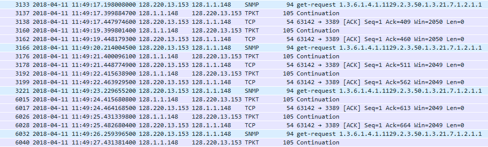
Résolution
Pour résoudre ce problème, désactivez la bidirectionnalité dans les propriétés de la file d'impression à partir de son interface de configuration :
-
dans la liste des périphériques installés sur le serveur, sélectionnez le périphérique ;
-
cliquez droit et, dans la liste, sélectionnez Propriétés ;
-
sous l'onglet Port, vérifiez que la case Activer la gestion du mode bidirectionnel est désactivée :
-
sous l'onglet Paramètre du périphérique, vérifiez que la case "Mise à jour auto" est décochée :
-
Sous l'onglet Avancé, cliquez sur le bouton Impression par défaut > Onglet Autres, véérifiez que la case Communication SNMP est bien désactivée.
N.B. : si l'imprimante est partagée directement, le SNMP doit rester activé.
Erreur lors de l'installation du WES - XSAServer : badValue
Contexte
Lors de l'installation du WES Xeros, le message d'erreur suivant s'affiche dans le rapport d'installation :
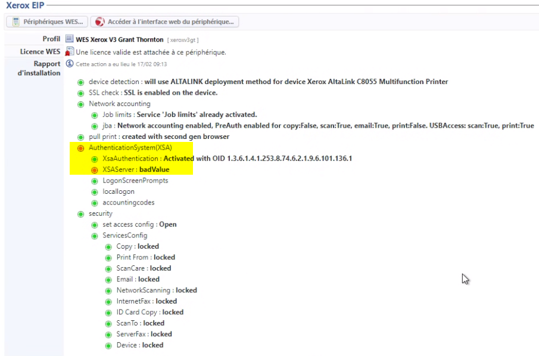
Cause
La connexion ne peut être établie entre le périphérique et Watchdoc car l'adresse du serveur n'est pas trouvée. Ce problème se produit souvent lorsque c'est une adresse DNS qui a été indiquée lors de la configuration du profil WES.
Résolution
Pour résoudre ce problème, il convient de modifier l'adresse du serveur dans l'interface de configuration du WES :
-
rendez-vous dans l'interface de configuration du WES (Menu principal > section Web, WES & Destinations de numérisation)
-
dans la liste des WES, sélectionnez le WES Xerox
-
dans le profil WES Xerox, section Périphérique, pour le paramètre Adresse du serveur, sélectionnez Adresse IP du serveur (adresse par défaut déterminée au démarrage du service).
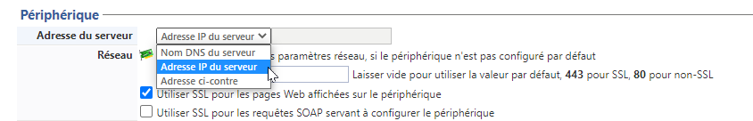
-
validez le profil WES et relancez l'installation du WES sur votre file d'impression.
Xerox Altalink - La numérisation multiplage (scan multipage) depuis la vitre est impossible
Contexte : depuis la vitre d'exposition d'un périphérique d'impression Altalink, l'utilisateur ne peut numériser qu'une seule page et n'arrive pas à ajouter de page supplémentaire.
Cause : la fonctionnalité n'est pas activée sur les périphériques d'impression.
Résolution : il convient d'autoriser ou d'activer la fonction sur les périphériques d'impresssion.
-
laissez le choix à l'utilisateur : dans ce cas, l'utilisateur doit cocher la case "Job build" dans l'interface de numérisation :
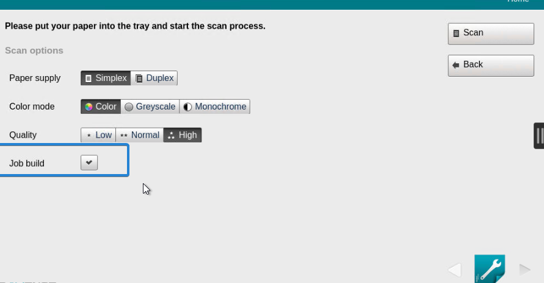
-
dans le profil ScanCare, activez le paramètre Constr. travail :
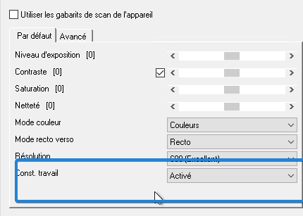
Message d'erreur : "Ce périphérique n'a pas de licence valide et sera rejeté par ce serveur"
Contexte
Quand le WES est associé à une file d'impression, il arrive que, suite à une panne du serveur ou du spooler MS Windows, le nombre des licences WES ne s'affiche pas dans les propriétés de cette file (Menu principal > File d'impression + sélection d'une file > Propriétés).
Par ailleurs, ce problème est tracé dans les logs Watchdoc (enregistrés par défaut dans C:\Program Files\Doxense\Watchdoc\logs\Watchdoc.txt), où un message d'erreur JSON Xerox apparaît en phase de démarrage du service.
Résolution
Pour résoudre ce problème, appliquez la procédure suivante :
-
vérifiez que le serveur est à jour avec la dernière version Watchdoc ;
-
vérifiez si l'erreur JSON est présente au démarrage du service ;
-
inventoriez les files n'affichant pas correctement les licences ;
-
rendez-vous dans le dossier c:\Program Files\Doxense\Watchdoc\Data\queues.jsdb ;
-
dans ce dossier, repérez les fichiers des files qui posent problème et renommez-les "NOMSERVEUR.QUEUES_OLD" ;
-
redémarrez le service Watchdoc ;
-
vérifiez dans les propriétés de la file que les licences WES s'affichent correctement.
Message d'erreur "404 page not found" lors de l'installation du WES
Contexte
Lors de l'installation du WES Xerox sur des modèles Altalink et Versalink, le message d'erreur "404 - page not found' s'affiche.
Cause
L'erreur est due à la configuration du périphérique sur lequel le protocole SOAP n'est pas activé. En conséquence, le périphérique ne réceptionne pas les informations envoyées par Watchdoc via ce protocole.
Résolution
Pour résoudre ce problème, il convient d'activer le protocole SOAP sur le périphérique. Procédez comme suit :
-
accédez au site web d'administration du périphérique et authentifiez-vous en tant qu'administrateur ;
-
dans le menu du site web d'administration du périphérique, cliquez sur Connectivity>SOAP ;
-
dans la boîte de dialogue, activez le protocole SOAP ;
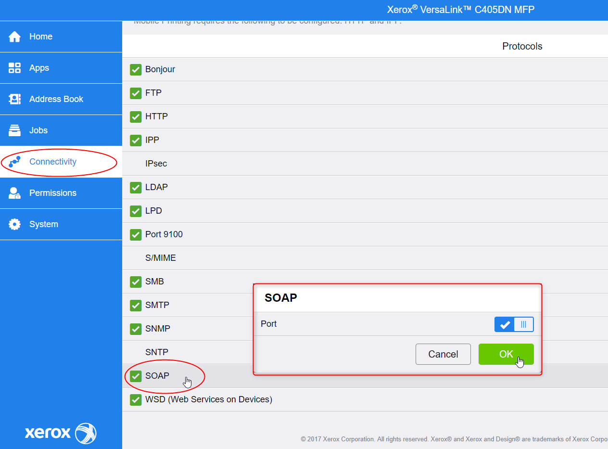
-
Poursuivez ensuite l'installation du WES.
Vérifier les paramètres de connexion sur le périphérique
Procédure
-
depuis un navigateur Web, rendez-vous dans l'interface d'administration du périphérique ;
-
authentifiez-vous en tant qu'administrateur ;
-
sous l'onglet Propriétés > Login/Droits/Comptes > Méthode de connexion, vérifiez que la case "retrouver automatiquement les information utilisateur à partir du LDAP" est décochée.
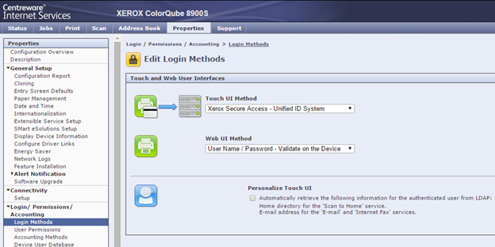